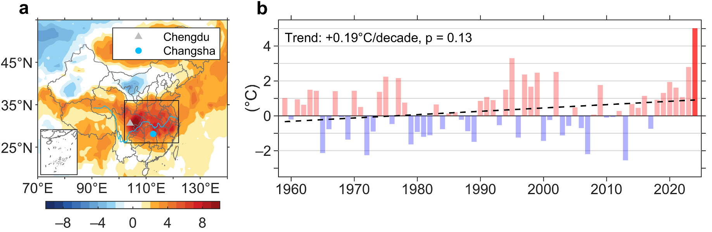
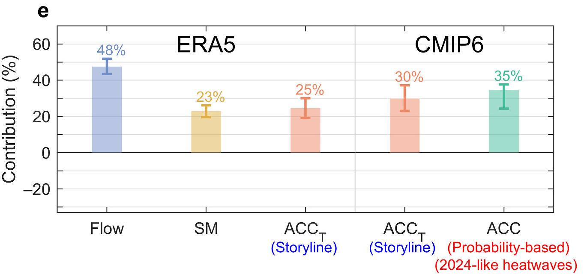
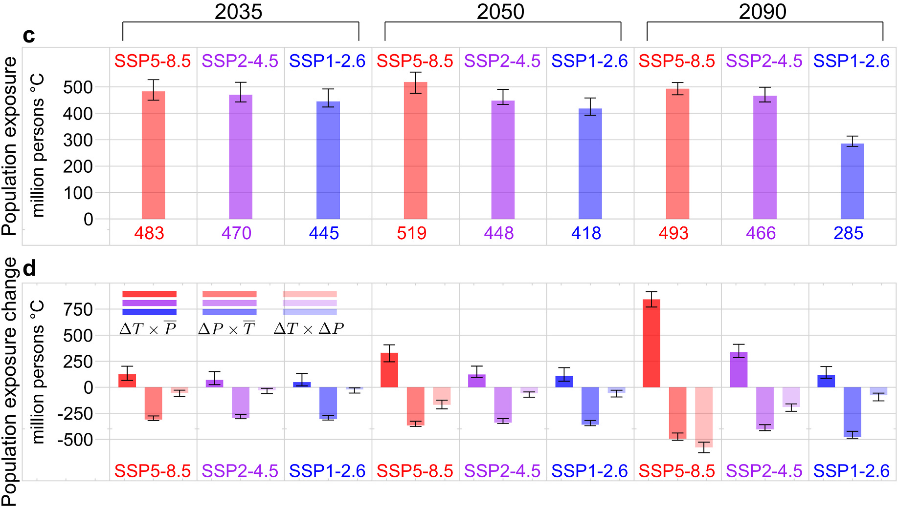

研究专栏｜高温归因与儿童暴露
开学了，暑热却还没结束：儿童高温暴露会怎样变化？
简介
这项研究将极端高温归因与儿童暴露结合起来，发现人为气候变化已经让 2024 年秋季开学期间这样的高温更常见、更强，并增加了儿童暴露。未来儿童人口预计减少，高温却会继续增强，两者向不同方向变化，共同决定儿童总暴露的走向。即使人口减少让总暴露下降，仍在当地生活和上学的孩子，也需要面对更频繁、更强的开学季高温。
背景
很多地区把开学安排在初秋，原本已经避开了盛夏最热的时段，但近年的秋季高温开始直接影响正常开学。2024 年 9 月，长江流域经历持续强烈高温，川渝及湖南、浙江等地出现 40°C 以上气温，一些城市推迟开学或暂停户外活动，仍有学生出现中暑。日历翻到了九月，暑热却没有如期退场。
这次过程集中在 9 月 1—10 日。长江流域区域平均最高气温异常达到约 5.02°C，创 1959 年以来同期纪录，接近此前 1995 年纪录的 1.5 倍。对刚回到学校的孩子来说，开学季也成了一个需要认真应对的高温时段。

我们因此想把天气、气候和人口放到一起看：先弄清这场高温为何如此强烈，再估计类似事件未来会怎样变化，最后结合儿童人口分布，看看这些气象上的变化会转化成多大的暴露。
方法
研究用长江流域 9 月 1—10 日平均最高气温相对于 1961—1990 年同期的异常表示事件强度，沿用“故事线—概率”结合框架。故事线分析借助构造环流相似方法，估计异常环流、干燥土壤和背景增暖对这次事件的贡献；概率分析使用六个 CMIP6 模式，比较有、无人为影响时类似高温的发生概率，以及同样罕见的事件能有多强。
环流和土壤干燥彼此有关，例如高压控制下少雨、日照增强，本身就会让土壤变干。为减少重复计算，我们先估计环流及其带来的土壤干燥效应，再分析剩余土壤湿度异常的贡献。这样，后面提到的土壤贡献，指的是扣除环流相关部分之后的额外作用。
儿童暴露用0—14 岁人口 × 高温事件强度计算，单位为人·°C，衡量多少儿童承受了多强的高温。这里保持儿童脆弱性不变，聚焦气候和人口两项变化，因此得到的是暴露指标，而非中暑人数或健康损失。未来变化进一步拆成高温强度、儿童人口，以及两者共同变化的交互项，三个部分相加就是总暴露的变化。
未来预估比较 SSP1-2.6、SSP2-4.5 和 SSP5-8.5 三条路径，以2024 年气候为基准。各时期用 21 年窗口表示，例如 2024 年对应 2014—2034 年，世纪末对应 2080—2100 年；人口则结合相应情景的总人口和联合国中方案的儿童人口比例估计。
结果
2024 年这场高温发生时，异常强盛的高压控制长江流域，西太平洋副热带高压也明显西伸，持续下沉、少云少雨和更强的日照共同维持了炎热天气。土壤偏干又减少了蒸发冷却，让更多热量留在近地面。
ERA5 重建表明，大尺度环流解释了约 48% 的事件强度，剩余土壤干燥贡献约 23%；固定相似环流后，过去与较近期气候的比较还得到约 25% 的背景增暖贡献。研究将这一差异主要解释为人为增暖，并用 CMIP6 有、无人为强迫的模拟检验，得到约 30% 的热力贡献。异常环流与干土壤塑造了这次天气过程，更暖的背景则进一步抬高了温度。

从同类事件的发生概率来看，人为影响更加明显。在 2024 年气候下，CMIP6 估计人为气候变化已使类似秋季高温的发生概率增至无人为影响时的约 514 倍，同等概率事件增强约 2.1°C。514 倍是最佳估计，其不确定性范围约为 190—1327 倍，反映了这种罕见事件概率估计的跨度。固定 2024 年人口分布后，儿童暴露由约 5.38 亿人·°C升至 8.34 亿人·°C，增加约 55%。
未来三条排放路径下，类似开学季高温都会继续增强，只是越往后差距越大。相对于 2024 年气候，到世纪末，SSP1-2.6 下发生概率预计约为 5.2 倍、强度增加约 0.9°C；SSP2-4.5 下约为 17.8 倍和 2.6°C；SSP5-8.5 下则约为 45.4 倍和 6.5°C。减排能明显限制增幅，但较低排放下的开学季也会比 2024 年更热。

把儿童人口变化加进来，总暴露的走势就丰富了许多。未来儿童人口减少，会把总量往下拉；高温增强则把它往上推。在较低排放的 SSP1-2.6 下，人口下降始终占主导，总暴露从 2035 年的约 4.45 亿人·°C，降至 2050 年的 4.18 亿人·°C，再降至 2090 年的 2.85 亿人·°C。
SSP2-4.5 下，总暴露先从约 4.70 亿人·°C降到 4.48 亿人·°C，再在世纪末回升到 4.66 亿人·°C，高温增强逐渐抵消了人口减少的影响。SSP5-8.5 下，高温的推动更强，三个时期的总暴露分别约为 4.83、5.19 和 4.93 亿人·°C，呈先升后降。这些未来总量均低于 2024 年的估计，但到世纪末，较低排放路径下的暴露明显低于另外两条路径。

讨论
这组结果最值得留意的地方，是总暴露和高温本身可以朝不同方向变化。儿童人口减少，可能让“人口 × 强度”的总量变小；但对未来仍在当地上学的孩子来说，所处的天气会更热，类似事件也更常见。把人口总量和气象危险分别看清楚，才能理解总暴露下降背后仍然存在的适应需求。
开学安排也需要跟着气候变化变得更灵活。如果高温越来越频繁地延续到初秋，原有校历就很难像过去那样避开最炎热的天气。根据预报调整开学日期和户外活动、改善教室降温条件，必要时采用线上教学，都是这篇研究提出的适应方向。要落实到具体学校，还需要结合当地校历、室内温度和孩子实际在户外的时间。
不同排放路径的差距说明，减排和学校层面的适应都有实际作用。前者限制未来高温会增强到什么程度，后者改善孩子在炎热天气中的学习和生活条件。人口下降带来的总量变化，不能替代这些具体的保护措施。
背后的故事
这篇工作在 2024 年底就完成了初稿，我还努力复刻了一下 IPCC 的绘图风格，主要用在未来预估的图上。但由于各种原因，稿件一直拖到 2025 年我毕业后才开始投稿，直到年底投到 WCE，才终于送审，收到同行的意见。
三位审稿人的关注点很不一样：一位希望我们把“故事线—概率”归因框架解释得更清楚，一位特别重视文章的写法和阅读节奏，另一位关注人口暴露，给出了拆分不同贡献项的具体建议。寒假前期，我不得不暂时放下手头的博士后工作，熬夜逐条回复和修改，好在一轮返修后就顺利接收了。
这篇文章发表，对我来说还有一层特别的意义：博士期间的工作，到这里终于全部收官了。